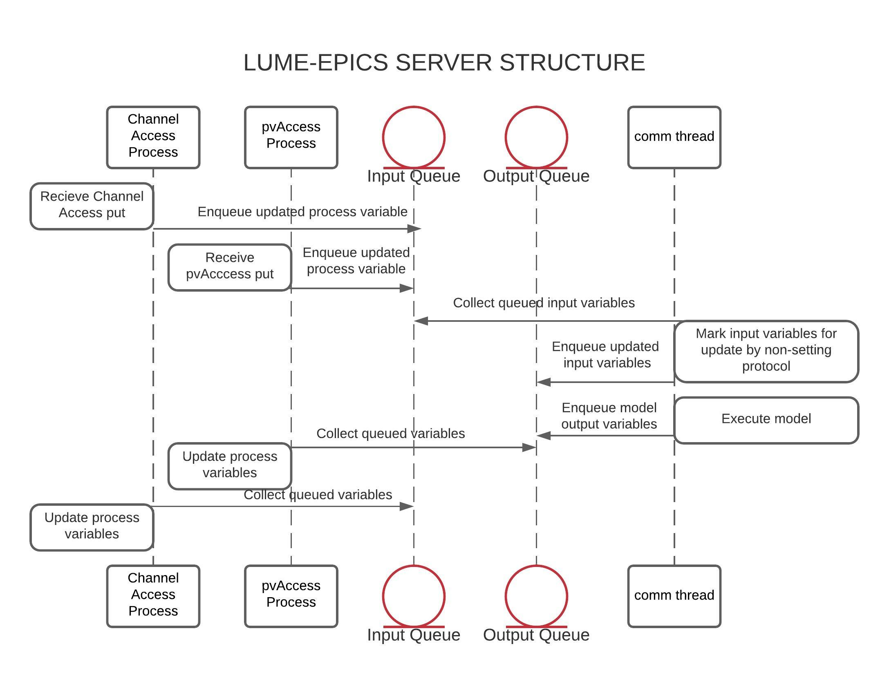

EPICS Server
The lume-epics server synchronizes process variables over Channel Access and pvAccess servers. Updates to input process variables are queued for model execution and the model output is queued for updates over both protocols.

Server
Server for EPICS process variables. Can be optionally initialized with only pvAccess or Channel Access protocols; but, defaults to serving over both.
Attributes:
| Name | Type | Description |
|---|---|---|
model |
SurrogateModel |
SurrogateModel class to be served |
input_variables |
List[Variable] |
List of lume-model variables passed to model. |
ouput_variables |
List[Variable] |
List of lume-model variables to use as outputs. |
ca_server |
SimpleServer |
Server class that interfaces between the Channel Access client and the driver. |
ca_driver |
CADriver |
Class used by server to handle to process variable read/write requests. |
pva_server |
P4PServer |
Threaded p4p server used for serving pvAccess variables. |
exit_event |
Event |
Threading exit event marking server shutdown. |
__init__
(self, model_class, prefix, protocols=['pva', 'ca'], model_kwargs={})
special
Create OnlineSurrogateModel instance in the main thread and initialize output variables by running with the input process variable state, input/output variable tracking, start the server, create the process variables, and start the driver.
Parameters:
| Name | Type | Description | Default |
|---|---|---|---|
model_class |
SurrogateModel |
Surrogate model class to be |
required |
prefix |
str |
Prefix used to format process variables. |
required |
protocols |
List[str] |
List of protocols used to instantiate server. |
['pva', 'ca'] |
model_kwargs |
dict |
Kwargs to instantiate model. |
{} |
Source code in lume_epics/epics_server.py
def __init__(
self,
model_class: SurrogateModel,
prefix: str,
protocols: List[str] = ["pva", "ca"],
model_kwargs: dict = {},
) -> None:
"""Create OnlineSurrogateModel instance in the main thread and
initialize output variables by running with the input process variable
state, input/output variable tracking, start the server, create the
process variables, and start the driver.
Args:
model_class (SurrogateModel): Surrogate model class to be
instantiated.
prefix (str): Prefix used to format process variables.
protocols (List[str]): List of protocols used to instantiate server.
model_kwargs (dict): Kwargs to instantiate model.
"""
# check protocol conditions
if not protocols:
raise ValueError("Protocol must be provided to start server.")
if any([protocol not in ["ca", "pva"] for protocol in protocols]):
raise ValueError(
'Invalid protocol provided. Protocol options are "pva" '
'(pvAccess) and "ca" (Channel Access).'
)
# need these to be global to access from threads
self.prefix = prefix
self.protocols = protocols
model = model_class(**model_kwargs)
self.input_variables = model.input_variables
# update inputs for starting value to be the default
for variable in self.input_variables.values():
if variable.value is None:
variable.value = variable.default
model_input = list(self.input_variables.values())
self.input_variables = model.input_variables
self.output_variables = model.evaluate(model_input)
self.output_variables = {
variable.name: variable for variable in self.output_variables
}
self.in_queue = multiprocessing.Queue()
self.out_queues = dict()
for protocol in protocols:
self.out_queues[protocol] = multiprocessing.Queue()
self.exit_event = Event()
self.comm_thread = threading.Thread(
target=self.run_comm_thread,
args=(model_class,),
kwargs={
"model_kwargs": model_kwargs,
"in_queue": self.in_queue,
"out_queues": self.out_queues
}
)
# track running servers
self._ca_running = multiprocessing.Value('b', False)
self._pva_running = multiprocessing.Value('b', False)
# initialize channel access server
if "ca" in protocols:
self.ca_process = CAServer(
prefix=self.prefix,
input_variables=self.input_variables,
output_variables=self.output_variables,
in_queue=self.in_queue,
out_queue=self.out_queues["ca"],
running_indicator=self._ca_running,
)
# initialize pvAccess server
if "pva" in protocols:
manager = multiprocessing.Manager()
self._pva_conf = manager.dict()
self.pva_process = PVAServer(
prefix=self.prefix,
input_variables=self.input_variables,
output_variables=self.output_variables,
in_queue=self.in_queue,
out_queue=self.out_queues["pva"],
running_indicator = self._pva_running,
conf_proxy = self._pva_conf,
)
run_comm_thread
(self, model_class, model_kwargs={}, in_queue=None, out_queues=None)
Handles communications between pvAccess server, Channel Access server, and model.
Parameters:
| Name | Type | Description | Default |
|---|---|---|---|
model_class |
|
Model class to be executed. |
required |
model_kwargs |
dict |
Dictionary of model keyword arguments. |
{} |
in_queue |
<bound method BaseContext.Queue of <multiprocessing.context.DefaultContext object at 0x7f99c4b11e90>> |
None |
|
out_queues |
Dict[str, <bound method BaseContext.Queue of <multiprocessing.context.DefaultContext object at 0x7f99c4b11e90>>] |
multiprocessing.Queue]): Maps protocol to output assignment queue. |
None |
Source code in lume_epics/epics_server.py
def run_comm_thread(self, model_class, model_kwargs={}, in_queue: multiprocessing.Queue=None,
out_queues: Dict[str, multiprocessing.Queue]=None):
"""Handles communications between pvAccess server, Channel Access server, and model.
Arguments:
model_class: Model class to be executed.
model_kwargs (dict): Dictionary of model keyword arguments.
in_queue (multiprocessing.Queue):
out_queues (Dict[str: multiprocessing.Queue]): Maps protocol to output assignment queue.
"""
model = model_class(**model_kwargs)
while not self.exit_event.is_set():
try:
data = in_queue.get(timeout=0.1)
self.input_variables[data["pvname"]].value = data["value"]
for protocol, queue in out_queues.items():
if protocol == data["protocol"]:
continue
queue.put(
{"input_variables":
[self.input_variables[data["pvname"]]]
}
)
# update output variable state
model_input = list(self.input_variables.values())
predicted_output = model.evaluate(model_input)
for protocol, queue in out_queues.items():
queue.put({"output_variables": predicted_output},
timeout=0.1)
except Empty:
continue
except Full:
logger.error(f"{protocol} queue is full.")
logger.info("Stopping comm thread")
start
(self, monitor=True)
Starts server using set server protocol(s).
Args: monitor (bool): Indicates whether to run the server in the background or to continually monitor. If monitor = False, the server must be explicitly stopped using server.stop()
Source code in lume_epics/epics_server.py
def start(self, monitor: bool = True) -> None:
"""Starts server using set server protocol(s).
Args:
monitor (bool): Indicates whether to run the server in the background
or to continually monitor. If monitor = False, the server must be
explicitly stopped using server.stop()
"""
self.comm_thread.start()
if "ca" in self.protocols:
self.ca_process.start()
if "pva" in self.protocols:
self.pva_process.start()
if monitor:
try:
while True:
time.sleep(0.1)
except KeyboardInterrupt:
self.stop()
stop
(self)
Stops the server.
Source code in lume_epics/epics_server.py
def stop(self) -> None:
"""Stops the server.
"""
logger.info("Stopping server.")
self.exit_event.set()
self.comm_thread.join()
if "ca" in self.protocols:
self.ca_process.shutdown()
if "pva" in self.protocols:
self.pva_process.shutdown()
logger.info("Server is stopped.")
CADriver
Class for handling read and write requests to Channel Access process variables.
read
(self, pvname)
Method executed by server when clients read a Channel Access process variable.
Parameters:
| Name | Type | Description | Default |
|---|---|---|---|
pvname |
str |
Process variable name. |
required |
Source code in lume_epics/epics_ca_server.py
def read(self, pvname: str) -> Union[float, np.ndarray]:
"""Method executed by server when clients read a Channel Access process
variable.
Args:
pvname (str): Process variable name.
"""
return self.getParam(pvname)
update_pvs
(self, variables)
Update output Channel Access process variables after model execution.
Parameters:
| Name | Type | Description | Default |
|---|---|---|---|
variables |
List[lume_model.variables.Variable] |
List of variables. |
required |
Source code in lume_epics/epics_ca_server.py
def update_pvs(self, variables: List[Variable]) -> None:
"""Update output Channel Access process variables after model execution.
Args:
variables (List[Variable]): List of variables.
"""
for variable in variables:
if variable.name in self.server._input_variables and variable.is_constant:
logger.debug("Cannot update constant variable %s", variable.name)
else:
if variable.variable_type == "image":
logger.debug(
"Channel Access image process variable %s updated.",
variable.name)
self.setParam(
variable.name + ":ArrayData_RBV", variable.value.flatten()
)
self.setParam(variable.name + ":MinX_RBV", variable.x_min)
self.setParam(variable.name + ":MinY_RBV", variable.y_min)
self.setParam(variable.name + ":MaxX_RBV", variable.x_max)
self.setParam(variable.name + ":MaxY_RBV", variable.y_max)
else:
logger.debug(
"Channel Access process variable %s updated wth value %s.",
variable.name, variable.value)
self.setParam(variable.name, variable.value)
self.updatePVs()
write
(self, pvname, value)
Method executed by server when clients write to a Channel Access process variable.
Parameters:
| Name | Type | Description | Default |
|---|---|---|---|
pvname |
str |
Process variable name. |
required |
value |
Union[float, numpy.ndarray] |
Value to assign to the process variable. |
required |
Source code in lume_epics/epics_ca_server.py
def write(self, pvname: str, value: Union[float, np.ndarray]) -> bool:
"""Method executed by server when clients write to a Channel Access process
variable.
Args:
pvname (str): Process variable name.
value (Union[float, np.ndarray]): Value to assign to the process variable.
"""
# handle area detector types
model_var_name = pvname
if pvname in self.server._child_to_parent_map:
model_var_name = self.server._child_to_parent_map[pvname]
if model_var_name in self.server._output_variables:
logger.warning(
"Cannot update variable %s. Output variables can only be updated via surrogate model callback.",
pvname)
return False
if model_var_name in self.server._input_variables:
# handle image variables
if self.server._input_variables[model_var_name].is_constant:
logger.debug("Unable to update constant variable %s", model_var_name)
else:
self.setParam(pvname, value)
self.updatePVs()
logger.debug(
"Channel Access process variable %s updated with value %s",
pvname, value)
self.server.update_pv(pvname=pvname, value=value)
return True
else:
logger.error("%s not found in server variables.", pvname)
return False
CAServer
Process-based implementation of Channel Access server.
Attributes:
| Name | Type | Description |
|---|---|---|
ca_server |
SimpleServer |
pcaspy SimpleServer instance |
ca_driver |
Driver |
pcaspy Driver instance |
server_thread |
ServerThread |
Thread for running the server |
exit_event |
multiprocessing.Event |
Event indicating shutdown |
__init__
(self, prefix, input_variables, output_variables, in_queue, out_queue, running_indicator, *
args, **
kwargs)
special
Initialize server process.
Parameters:
| Name | Type | Description | Default |
|---|---|---|---|
prefix |
str |
EPICS prefix for serving process variables |
required |
input_variables |
Dict[str, lume_model.variables.InputVariable] |
Dictionary mapping pvname to lume-model input variable. |
required |
output_variables |
Dict[str, lume_model.variables.OutputVariable] |
Dictionary mapping pvname to lume-model output variable. |
required |
in_queue |
<bound method BaseContext.Queue of <multiprocessing.context.DefaultContext object at 0x7f99c4b11e90>> |
Queue for tracking updates to input variables |
required |
out_queue |
<bound method BaseContext.Queue of <multiprocessing.context.DefaultContext object at 0x7f99c4b11e90>> |
Queue for tracking updates to output variables |
required |
Source code in lume_epics/epics_ca_server.py
def __init__(self,
prefix: str,
input_variables: Dict[str, InputVariable],
output_variables: Dict[str, OutputVariable],
in_queue: multiprocessing.Queue,
out_queue: multiprocessing.Queue,
running_indicator: multiprocessing.Value,
*args, **kwargs) -> None:
"""Initialize server process.
Args:
prefix (str): EPICS prefix for serving process variables
input_variables (Dict[str, InputVariable]): Dictionary mapping pvname to lume-model input variable.
output_variables (Dict[str, OutputVariable]):Dictionary mapping pvname to lume-model output variable.
in_queue (multiprocessing.Queue): Queue for tracking updates to input variables
out_queue (multiprocessing.Queue): Queue for tracking updates to output variables
"""
super().__init__(*args, **kwargs)
self.ca_server = None
self.ca_driver = None
self.server_thread = None
self.exit_event = multiprocessing.Event()
self._prefix = prefix
self._input_variables = input_variables
self._output_variables = output_variables
self._in_queue = in_queue
self._out_queue = out_queue
self._providers = {}
self._running = running_indicator
run
(self)
Start server process.
Source code in lume_epics/epics_ca_server.py
def run(self) -> None:
"""Start server process.
"""
self.setup_server()
self._running.value = True
while not self.exit_event.is_set():
try:
data = self._out_queue.get_nowait()
inputs = data.get('input_variables', [])
outputs = data.get('output_variables', [])
self.update_pvs(inputs, outputs)
except Empty:
time.sleep(0.01)
logger.debug("out queue empty")
self.server_thread.stop()
self._running.value = False
logger.info("Channel access server stopped.")
setup_server
(self)
Configure and start server.
Source code in lume_epics/epics_ca_server.py
def setup_server(self) -> None:
"""Configure and start server.
"""
# ignore interrupt in subprocess
signal.signal(signal.SIGINT, signal.SIG_IGN)
logger.info("Initializing CA server")
# initialize channel access server
self.ca_server = SimpleServer()
# create all process variables using the process variables stored in
# pvdb with the given prefix
pvdb, self._child_to_parent_map = build_pvdb(self._input_variables, self._output_variables)
self.ca_server.createPV(self._prefix + ":", pvdb)
# set up driver for handing read and write requests to process variables
self.ca_driver = CADriver(server=self)
# start the server thread
self.server_thread = ServerThread(self.ca_server)
self.server_thread.start()
logger.info("CA server started")
shutdown
(self)
Safely shutdown the server process.
Source code in lume_epics/epics_ca_server.py
def shutdown(self):
"""Safely shutdown the server process.
"""
self.exit_event.set()
update_pv
(self, pvname, value)
Adds update to input process variable to the input queue.
Parameters:
| Name | Type | Description | Default |
|---|---|---|---|
pvname |
str |
Name of process variable |
required |
value |
Union[np.ndarray, float] |
Value to set |
required |
Source code in lume_epics/epics_ca_server.py
def update_pv(self, pvname, value) -> None:
"""Adds update to input process variable to the input queue.
Args:
pvname (str): Name of process variable
value (Union[np.ndarray, float]): Value to set
"""
val = value
pvname = pvname.replace(f"{self._prefix}:", "")
self._in_queue.put(
{"protocol": self.protocol, "pvname": pvname, "value": val}
)
update_pvs
(self, input_variables, output_variables)
Update process variables over Channel Access.
Parameters:
| Name | Type | Description | Default |
|---|---|---|---|
input_variables |
List[lume_model.variables.InputVariable] |
List of lume-epics output variables. |
required |
output_variables |
List[lume_model.variables.OutputVariable] |
List of lume-model output variables. |
required |
Source code in lume_epics/epics_ca_server.py
def update_pvs(self, input_variables: List[InputVariable], output_variables: List[OutputVariable]):
"""Update process variables over Channel Access.
Args:
input_variables (List[InputVariable]): List of lume-epics output variables.
output_variables (List[OutputVariable]): List of lume-model output variables.
"""
variables = input_variables + output_variables
self.ca_driver.update_pvs(variables)
build_pvdb
(input_variables, output_variables)
Utility function for building dictionary (pvdb) used to initialize the channel access server.
Parameters:
| Name | Type | Description | Default |
|---|---|---|---|
input_variables |
List[lume_model.variables.InputVariable] |
List of lume_model input variables to be served with channel access server. |
required |
output_variables |
List[lume_model.variables.OutputVariable] |
List of lume_model output variables to be served with channel access server. |
required |
Returns:
| Type | Description |
|---|---|
tuple |
pvdb (dict) child_to_parent_map (dict): Mapping of child pvs to parent model variables |
Source code in lume_epics/epics_ca_server.py
def build_pvdb(input_variables: List[InputVariable],
output_variables: List[OutputVariable]) -> tuple:
"""Utility function for building dictionary (pvdb) used to initialize the channel
access server.
Args:
input_variables (List[InputVariable]): List of lume_model input variables to be served with
channel access server.
output_variables (List[OutputVariable]): List of lume_model output variables to be served with
channel access server.
Returns:
pvdb (dict)
child_to_parent_map (dict): Mapping of child pvs to parent model variables
"""
pvdb = {}
# convert to list
variables = copy.deepcopy(input_variables)
variables.update(output_variables)
variables = list(variables.values())
child_to_parent_map = {}
for variable in variables:
if variable.variable_type == "image":
# infer color mode
if variable.value.ndim == 2:
color_mode = 0
elif variable.value:
raise Exception(
"Color mode cannot be inferred from image shape.")
# assign default PVS
pvdb.update(
{
f"{variable.name}:NDimensions_RBV": {
"type": "float",
"prec": variable.precision,
"value": variable.value.ndim,
},
f"{variable.name}:Dimensions_RBV": {
"type": "int",
"prec": variable.precision,
"count": variable.value.ndim,
"value": variable.value.shape,
},
f"{variable.name}:ArraySizeX_RBV": {
"type": "int",
"value": variable.value.shape[0],
},
f"{variable.name}:ArraySizeY_RBV": {
"type": "int",
"value": variable.value.shape[1],
},
f"{variable.name}:ArraySize_RBV": {
"type": "int",
"value": int(np.prod(variable.value.shape)),
},
f"{variable.name}:ArrayData_RBV": {
"type": "float",
"prec": variable.precision,
"count": int(np.prod(variable.value.shape)),
"value": variable.value.flatten(),
},
f"{variable.name}:MinX_RBV": {
"type": "float",
"value": variable.x_min,
},
f"{variable.name}:MinY_RBV": {
"type": "float",
"value": variable.y_min,
},
f"{variable.name}:MaxX_RBV": {
"type": "float",
"value": variable.x_max,
},
f"{variable.name}:MaxY_RBV": {
"type": "float",
"value": variable.y_max,
},
f"{variable.name}:ColorMode_RBV": {
"type": "int",
"value": color_mode,
},
}
)
child_to_parent_map.update({f"{variable.name}:{child}":variable.name for child in ["NDimensions_RBV","Dimensions_RBV", "ArraySizeX_RBV","ArraySizeY_RBV", "ArraySize_RBV", "ArrayData_RBV", "MinX_RBV","MinY_RBV", "MaxX_RBV", "MaxY_RBV", "ColorMode_RBV"]})
if "units" in variable.__fields_set__:
pvdb[f"{variable.name}:ArrayData_RBV"]["unit"] = variable.units
# placeholder for color images, not yet implemented
if variable.value.ndim > 2:
pvdb[f"{variable.name}:ArraySizeZ_RBV"] = {
"type": "int",
"value": variable.value.shape[2],
}
else:
pvdb[variable.name] = variable.dict(
exclude_unset=True, by_alias=True
)
if variable.value_range is not None:
pvdb[variable.name]["hilim"] = variable.value_range[1]
pvdb[variable.name]["lolim"] = variable.value_range[0]
if variable.units is not None:
pvdb[variable.name]["unit"] = variable.units
return pvdb, child_to_parent_map
PVAccessInputHandler
Handler object that defines the callbacks to execute on put operations to input process variables.
__init__
(self, pvname, is_constant, server)
special
Initialize the handler with prefix and image pv attributes
Parameters:
| Name | Type | Description | Default |
|---|---|---|---|
pvname |
str |
The PV being handled |
required |
server |
PVAServer |
Reference to the server holding this PV |
required |
Source code in lume_epics/epics_pva_server.py
def __init__(self, pvname: str, is_constant: bool, server: PVAServer):
"""
Initialize the handler with prefix and image pv attributes
Args:
pvname (str): The PV being handled
server (PVAServer): Reference to the server holding this PV
"""
self.is_constant = is_constant
self.pvname = pvname
self.server = server
put
(self, pv, op)
Updates the global input process variable state, posts the input process variable value change, runs the thread local OnlineSurrogateModel instance using the updated global input process variable states, and posts the model output values to the output process variables.
Parameters:
| Name | Type | Description | Default |
|---|---|---|---|
pv |
SharedPV |
Input process variable on which the put operates. |
required |
op |
ServOpWrap |
Server operation initiated by the put call. |
required |
Source code in lume_epics/epics_pva_server.py
def put(self, pv: SharedPV, op: ServOpWrap) -> None:
"""Updates the global input process variable state, posts the input process
variable value change, runs the thread local OnlineSurrogateModel instance
using the updated global input process variable states, and posts the model
output values to the output process variables.
Args:
pv (SharedPV): Input process variable on which the put operates.
op (ServOpWrap): Server operation initiated by the put call.
"""
# update input values and global input process variable state
if not self.is_constant:
pv.post(op.value())
self.server.update_pv(pvname=self.pvname, value=op.value())
# mark server operation as complete
op.done()
PVAServer
Process-based implementation of Channel Access server.
Attributes:
| Name | Type | Description |
|---|---|---|
pva_server |
P4PServer |
p4p server instance |
exit_event |
multiprocessing.Event |
Event indicating shutdown |
__init__
(self, prefix, input_variables, output_variables, in_queue, out_queue, running_indicator, conf_proxy, *
args, **
kwargs)
special
Initialize server process.
Parameters:
| Name | Type | Description | Default |
|---|---|---|---|
prefix |
str |
EPICS prefix for serving process variables |
required |
input_variables |
List[lume_model.variables.InputVariable] |
Dictionary mapping pvname to lume-model input variable. |
required |
output_variables |
List[lume_model.variables.OutputVariable] |
Dictionary mapping pvname to lume-model output variable. |
required |
in_queue |
<bound method BaseContext.Queue of <multiprocessing.context.DefaultContext object at 0x7f99c4b11e90>> |
Queue for tracking updates to input variables |
required |
out_queue |
<bound method BaseContext.Queue of <multiprocessing.context.DefaultContext object at 0x7f99c4b11e90>> |
Queue for tracking updates to output variables |
required |
Source code in lume_epics/epics_pva_server.py
def __init__(
self,
prefix: str,
input_variables: List[InputVariable],
output_variables: List[OutputVariable],
in_queue: multiprocessing.Queue,
out_queue: multiprocessing.Queue,
running_indicator: multiprocessing.Value,
conf_proxy: DictProxy,
*args,
**kwargs,
) -> None:
"""Initialize server process.
Args:
prefix (str): EPICS prefix for serving process variables
input_variables (Dict[str, InputVariable]): Dictionary mapping pvname to lume-model input variable.
output_variables (Dict[str, OutputVariable]):Dictionary mapping pvname to lume-model output variable.
in_queue (multiprocessing.Queue): Queue for tracking updates to input variables
out_queue (multiprocessing.Queue): Queue for tracking updates to output variables
"""
super().__init__(*args, **kwargs)
self.pva_server = None
self.exit_event = multiprocessing.Event()
self._prefix = prefix
self._input_variables = input_variables
self._output_variables = output_variables
self._in_queue = in_queue
self._out_queue = out_queue
self._providers = {}
self._conf = conf_proxy
self._running = running_indicator
run
(self)
Start server process.
Source code in lume_epics/epics_pva_server.py
def run(self) -> None:
"""Start server process.
"""
self.setup_server()
self._running.value = True
# mark running
while not self.exit_event.is_set():
try:
data = self._out_queue.get_nowait()
inputs = data.get("input_variables", [])
outputs = data.get("output_variables", [])
self.update_pvs(inputs, outputs)
except Empty:
time.sleep(0.01)
logger.debug("out queue empty")
self.pva_server.stop()
self._running.value = False
logger.info("pvAccess server stopped.")
setup_server
(self)
Configure and start server.
Source code in lume_epics/epics_pva_server.py
def setup_server(self) -> None:
"""Configure and start server.
"""
# ignore interrupt in subprocess
signal.signal(signal.SIGINT, signal.SIG_IGN)
logger.info("Initializing pvAccess server")
# initialize global inputs
for variable in self._input_variables.values():
pvname = f"{self._prefix}:{variable.name}"
# prepare scalar variable types
if variable.variable_type == "scalar":
nt = NTScalar("d")
initial = variable.value
# prepare image variable types
elif variable.variable_type == "image":
nd_array = variable.value.view(NTNDArrayData)
nd_array.attrib = {
"x_min": variable.x_min,
"y_min": variable.y_min,
"x_max": variable.x_max,
"y_max": variable.y_max,
}
nt = NTNDArray()
initial = nd_array
else:
raise ValueError(
"Unsupported variable type provided: %s", variable.variable_type
)
handler = PVAccessInputHandler(
pvname=pvname, is_constant=variable.is_constant, server=self
)
pv = SharedPV(handler=handler, nt=nt, initial=initial)
self._providers[pvname] = pv
# use default handler for the output process variables
# updates to output pvs are handled from post calls within the input
# update
for variable in self._output_variables.values():
pvname = f"{self._prefix}:{variable.name}"
if variable.variable_type == "scalar":
nt = NTScalar()
initial = variable.value
elif variable.variable_type == "image":
nd_array = variable.value.view(NTNDArrayData)
# get image limits from model output
nd_array.attrib = {
"x_min": np.float64(variable.x_min),
"y_min": np.float64(variable.y_min),
"x_max": np.float64(variable.x_max),
"y_max": np.float64(variable.y_max),
}
nt = NTNDArray()
initial = nd_array
else:
raise ValueError(
"Unsupported variable type provided: %s", variable.variable_type
)
pv = SharedPV(nt=nt, initial=initial)
self._providers[pvname] = pv
else:
pass # throw exception for incorrect data type
# initialize pva server
self.pva_server = P4PServer(providers=[self._providers])
# update configuration
for key in self.pva_server.conf():
self._conf[key]= self.pva_server.conf()[key]
logger.info("pvAccess server started")
shutdown
(self)
Safely shutdown the server process.
Source code in lume_epics/epics_pva_server.py
def shutdown(self):
"""Safely shutdown the server process.
"""
self.exit_event.set()
update_pv
(self, pvname, value)
Adds update to input process variable to the input queue.
Parameters:
| Name | Type | Description | Default |
|---|---|---|---|
pvname |
str |
Name of process variable |
required |
value |
Union[numpy.ndarray, float] |
Value to set |
required |
Source code in lume_epics/epics_pva_server.py
def update_pv(self, pvname: str, value: Union[np.ndarray, float]) -> None:
"""Adds update to input process variable to the input queue.
Args:
pvname (str): Name of process variable
value (Union[np.ndarray, float]): Value to set
"""
# Hack for now to get the pickable value
val = value.raw.value
pvname = pvname.replace(f"{self._prefix}:", "")
self._in_queue.put({"protocol": self.protocol, "pvname": pvname, "value": val})
update_pvs
(self, input_variables, output_variables)
Update process variables over pvAccess.
Parameters:
| Name | Type | Description | Default |
|---|---|---|---|
input_variables |
List[lume_model.variables.InputVariable] |
List of lume-epics output variables. |
required |
output_variables |
List[lume_model.variables.OutputVariable] |
List of lume-model output variables. |
required |
Source code in lume_epics/epics_pva_server.py
def update_pvs(
self,
input_variables: List[InputVariable],
output_variables: List[OutputVariable],
) -> None:
"""Update process variables over pvAccess.
Args:
input_variables (List[InputVariable]): List of lume-epics output variables.
output_variables (List[OutputVariable]): List of lume-model output variables.
"""
variables = input_variables + output_variables
for variable in variables:
if variable.name in self._input_variables and variable.is_constant:
logger.debug("Cannot update constant variable.")
else:
pvname = f"{self._prefix}:{variable.name}"
if variable.variable_type == "image":
logger.debug(
"pvAccess image process variable %s updated.", variable.name
)
nd_array = variable.value.view(NTNDArrayData)
# get dw and dh from model output
nd_array.attrib = {
"x_min": variable.x_min,
"y_min": variable.y_min,
"x_max": variable.x_max,
"y_max": variable.y_max,
}
value = nd_array
# do not build attribute pvs
else:
logger.debug(
"pvAccess process variable %s updated with value %s.",
variable.name,
variable.value,
)
value = variable.value
output_provider = self._providers[pvname]
output_provider.post(value)